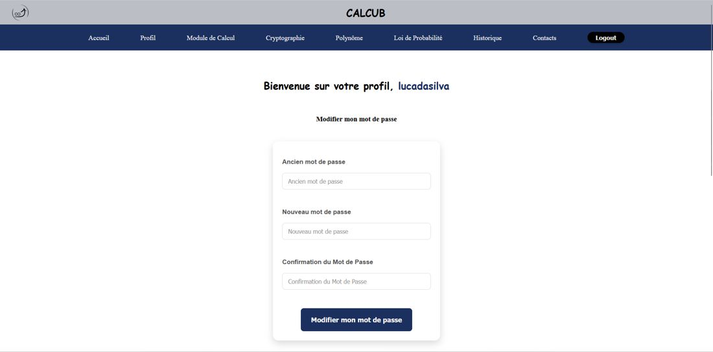
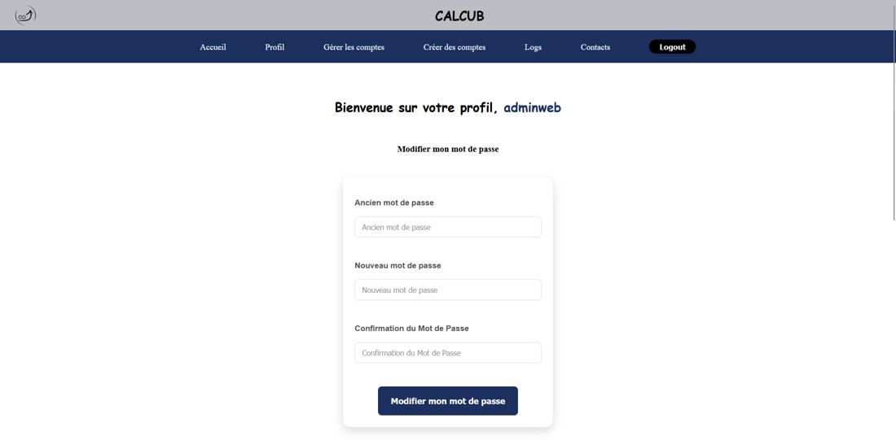
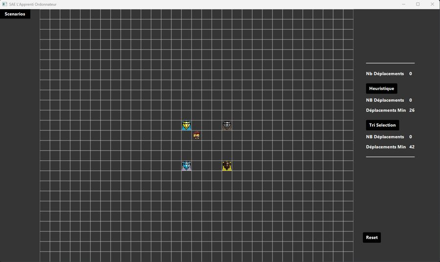

Projets
Des réalisations concrètes
Une sélection de projets académiques et professionnels. Mon code est sur GitHub.
Mes projets
Cluster Raspberry Pi et calcul distribué
Plateforme web pilotant un cluster de 5 Raspberry Pi (1 Pi 4 et 4 Pi Zero) pour lancer des calculs distribués (MPI, sockets TCP), suivre leur exécution et consulter les résultats. Authentification sécurisée, rôles utilisateurs, journalisation, monitoring et accès SSH sécurisé.
Chatbot GLPI
Chatbot JavaScript qui crée automatiquement des tickets IT et répond aux demandes récurrentes grâce à une base de connaissances enrichissable.
Calcub : plateforme de modules de calcul
Application web (HTML, CSS, PHP, JavaScript) hébergée sur Raspberry Pi avec Apache/MySQL : loi inverse gaussienne, chiffrement RC4, racines de polynômes, import/export CSV, gestion des rôles et logs. Voir le code.



Jeu en Java
Jeu interactif où l'on replace des cristaux dans leurs temples le plus vite possible, avec menu d'accueil et choix du scénario. Implémentation du tri par sélection et d'un tri heuristique.


Base de données Oracle et analyse
Conception d'une base Oracle SQL (modèle relationnel), requêtes complexes, puis analyse sous Excel avec tableaux croisés dynamiques et graphiques pour valider les résultats.
Poste de travail Linux
Création d'une clé USB bootable, installation complète d'un poste Linux, mise en place de Docker, gestion des utilisateurs, réglages de sécurité et optimisation.